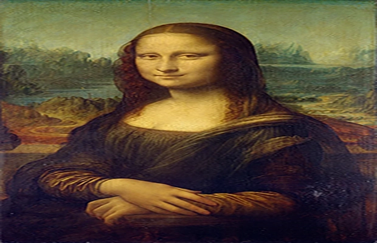
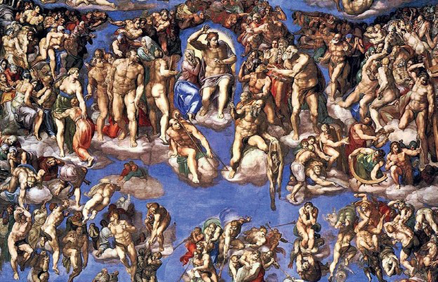
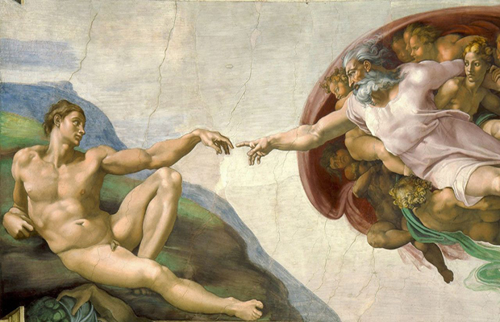
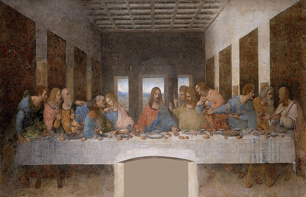
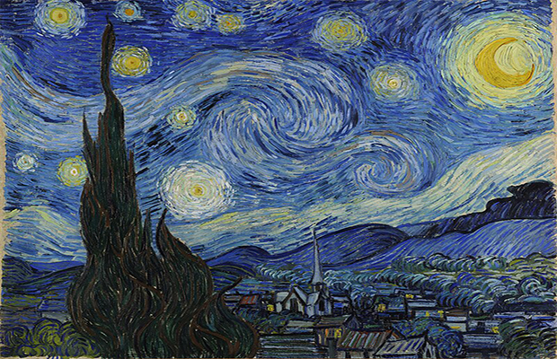
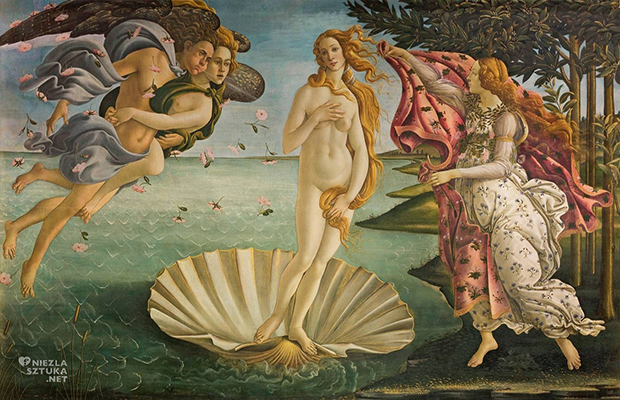
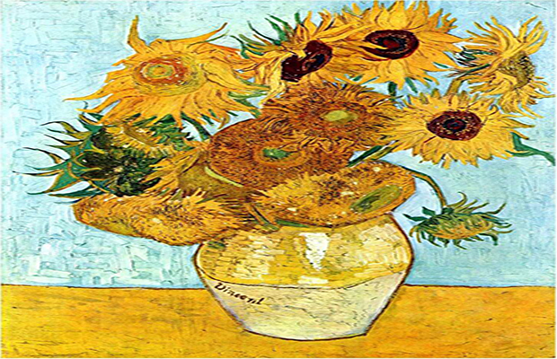

Lista Arcydzieł
- Mona Lisa - Leonardo da Vinci
- Sąd Ostateczny - Michał Anioł
- Stworzenie Adama - Michał Anioł
- Ostatnia Wieczerza - Leonardo da Vinci
- Gwieździsta Noc - Vincent van Gogh
- Narodziny Wenus - Sandro Botticelli
- Słoneczniki - Vincent van Gogh
Techniki Malarskie
| # | Technika | Opis | Przykład Dzieła |
|---|---|---|---|
| 1 | Fresk | Technika malowania na mokrym tynku, stosowana głównie w okresie renesansu. | Stworzenie Adama |
| 2 | Olej na płótnie | Malowanie farbami olejnymi, popularne od XV wieku. | Mona Lisa |
| 3 | Akwarela | Technika wykorzystująca rozcieńczone farby wodne na papierze. | Pejzaże Claude'a Moneta |
| 4 | Impasto | Nałożenie grubej warstwy farby, tworzącej teksturę. | Gwieździsta Noc |
| 5 | Enkaustyka | Starożytna technika malowania woskiem, używana w Grecji i Egipcie. | Portrety Fajum |
Mona Lisa
Mona Lisa (Leonardo da Vinci) – Jeden z najsłynniejszych obrazów na świecie, przedstawiający tajemniczy portret kobiety. Została stworzona w XVI wieku i jest znana dzięki subtelnej uśmiechowi oraz niezwykłemu mistrzostwu w przedstawieniu ludzkiej twarzy i tła.
Powrót na początek stronySąd Ostateczny
Sąd Ostateczny (Michał Anioł) – Obraz przedstawiający scenę sądu ostatecznego, gdzie potępieni są wysyłani do piekła, a zbawieni wstępują do nieba. To dzieło pełne jest mrocznych, surrealistycznych detali, ukazujących złożoną wizję apokalipsy.
Powrót na początek stronyStworzenie Adama
Stworzenie Adama (Michelangelo) – Fresk znajdujący się w Kaplicy Sykstyńskiej w Watykanie. Przedstawia scenę, w której Bóg przekazuje życie Adamowi poprzez dotyk palca, co symbolizuje początek ludzkiego istnienia.
Powrót na początek stronyOstatnia Wieczerza
Ostatnia Wieczerza (Leonardo da Vinci) – Obraz ukazujący Jezusa Chrystusa i Jego uczniów podczas ostatniej wieczerzy przed ukrzyżowaniem. Mistrzowskie przedstawienie emocji i gestów osób zasiadających przy stole.
Powrót na początek stronyGwieździsta Noc
Gwieździsta Noc (Vincent van Gogh) – Jeden z najbardziej rozpoznawalnych obrazów postimpresjonizmu, przedstawiający nocne niebo pełne wirujących gwiazd, z dynamicznym i emocjonalnym ruchem.
Powrót na początek stronyNarodziny Wenus
Narodziny Wenus (Sandro Botticelli) – Obraz przedstawiający narodziny bogini Wenus z morza, ukazujący klasyczną mitologię grecką w stylu renesansowym, pełen zmysłowości i piękna.
Powrót na początek stronySłoneczniki
Słoneczniki (Vincent van Gogh) – Seria obrazów autorstwa van Gogha, ukazujących bukiety słoneczników w różnych fazach rozkwitu. To symboliczne przedstawienie życia, śmierci i energii natury.
Powrót na początek stronyGaleria Obrazów
Formularz
Powrót na początek strony
Powrót na początek strony
Mapa Google
Powrót na początek strony